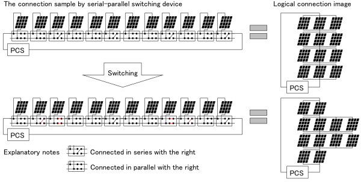

|
Optimization benchmark problem for series-parallel switching
of photovoltaic modules programming (Ver. 2)
Summary
In the photovoltaic system, photovoltaic modules whose number is from a few dozen to a few thousand are connected in series or in parallel, and the generated power is transformed into AC power by the PCS (power conditioning system), as shown in Fig. 1.
Generated output of the photovoltaic modules is not necessarily constant due to the various characteristics of the module and influence from shadows.
Therefore, the modules cannot output maximum power.
This problem is formulated to determine a series-parallel module assignment parallel and current and voltage output in dynamic reconstruction of module connections so that the modules generate as much power as possible.
This benchmark problem provides the photovoltaic modules serial-parallel switch programming problem with 54 modules and 9 layers.
The specific formulation is given in the reference [1].
The source code uses a little different symbols and formulations from the reference [1].
For details, please see the PDF document (written in Japanese).

Fig. 1: The photovoltaic modules series-parallel switching device and connection image [1]
Class and scale
- Class: Mixed-integer nonlinear optimization problem
- Number of decision variables: 116 (Continuous: 63, Discrete: 53)
- Number of inequality constraints: 164 (Linear: 164, Nonlinear: 0)
- Number of equality constraints: 63 (Linear: 9, Nonlinear: 54)
Known Feasible Solutions (OFV is objective function value. Sol. is solution.)
| Method |
OFV |
Constraint violations |
Ref. |
Reporter |
Sol. |
| Total |
Tolerance |
| Tabu Search × SQP |
5159.29515 |
3.73 × 10-11 |
1.0 × 10-10 |
[1] |
T. Hayashi |
Sol.† |
†Decompress the obtained file. Replace the decompressed text files by "P6_solution_x.txt" and "P6_solution_y.txt" in the source code.
Source code
P6-2.zip (C/C++) — See "Readme.txt" in order to know how to use.
References
| [1] |
T. Hayashi: "The series-parallel switching of photovoltaic modules, and mixed integer programming", Proc. of the first IEEJ International Workshop on Sensing, Actuation, Snd Motion Control (SAMCON2015), IS1-3 (2015) |
Change log
- Nov. 19th, 2015: The source code based on the reference [1] is released.
|